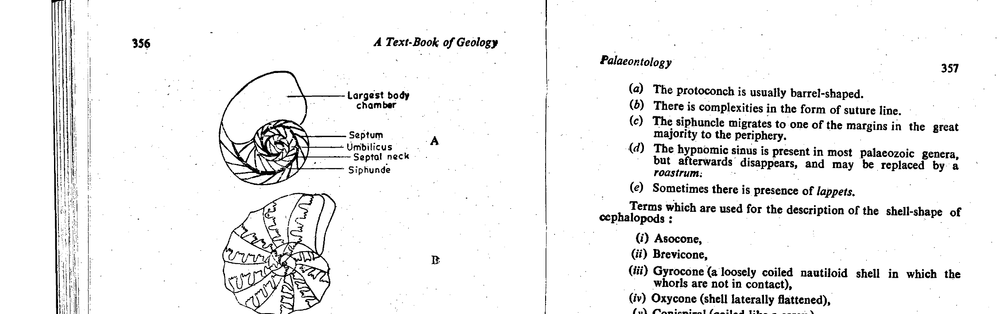

In invertebrate paleontology and biostratigraphy (Arkell, 1956, Jurassic Geology of the World; Sam Boggs Jr., Ch. 15; Raup & Stanley, Principles of Paleontology), ammonites (Ammonoidea) represent the premier, golden benchmark of index fossils (guide fossils / zone fossils) for the Mesozoic Era, and most spectacularly for the Jurassic Period:
| Index Fossil Criterion | Theoretical Biological Definition | Fulfillment by Jurassic Ammonites |
|---|---|---|
| 1. Rapid Evolutionary Rate | Rapid morphological innovation and speciation over short geological time spans. | Extremely rapid evolution of complex suture lines (Goniatitic → Ceratitic → Ammonitic with complex folioles and lobes). Species turnover every $\sim 0.5 - 1.0\text{ Ma}$. |
| 2. Narrow Stratigraphic Range | Individual species restricted to narrow chronostratigraphic intervals. | Enables ultra-fine division of Jurassic stages into sub-stages and standard ammonite biozones (e.g. 60+ biozones in the Jurassic). |
| 3. Wide Geographic Distribution | Cosmopolitan dispersion across multiple basins and ocean realms. | Pelagic, free-swimming nektonic marine mode of life; drift shells carried worldwide across the Tethys, Pacific, and Boreal seaways. |
| 4. High Abundance & Distinct Morphologies | Easily identified and frequently preserved in sedimentary strata. | Robust, easily fossilized aragonitic coiled shells with distinct ribbing, keels, and suture lines. |
In the world-famous marine Jurassic succession of Kutch (Kachchh) in Gujarat (Waagen, 1875; Spath, 1924), the stratigraphy is subdivided into four formations calibrated entirely against standard European ammonite biozones:
Without ammonites serving as index fossils, high-resolution global chronocorrelation of the Jurassic would be physically impossible.

Correct Answer: (B) index fossil — Jurassic stratigraphy worldwide (and in Indian basins like Kutch and Spiti) is universally based on the use of ammonites as index fossils (zone fossils) due to their rapid evolutionary rates, short stratigraphic ranges, and widespread marine dispersal.
| Jurassic Stage | Standard Age | Key Ammonite Index Genera (Kutch Basin) |
|---|---|---|
| Tithonian (Late Jurassic) | $152 - 145\text{ Ma}$ | Virgatosphinctes, Aulacosphinctes (Umia Formation) |
| Kimmeridgian | $157 - 152\text{ Ma}$ | Katroliceras, Aspidoceras, Pachysphinctes (Katrol Formation) |
| Oxfordian | $163 - 157\text{ Ma}$ | Mayaites, Dhosaites, Perisphinctes (Dhosan Sandstone) |
| Callovian | $166 - 163\text{ Ma}$ | Macrocephalites, Reineckeia, Peltoceras (Chari Formation) |
| Bathonian (Middle Jurassic) | $168 - 166\text{ Ma}$ | Macrocephalites triangularis, Sivajiceras (Patcham Formation) |